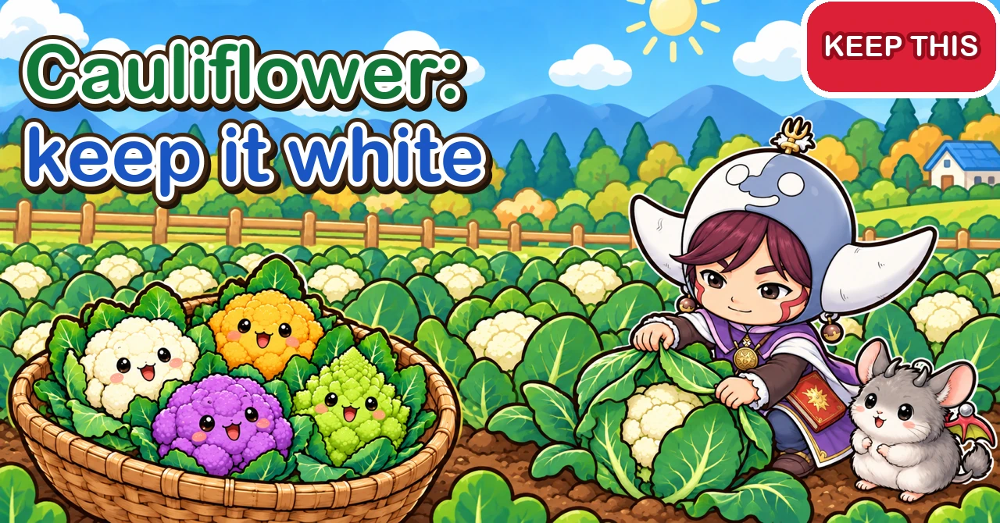
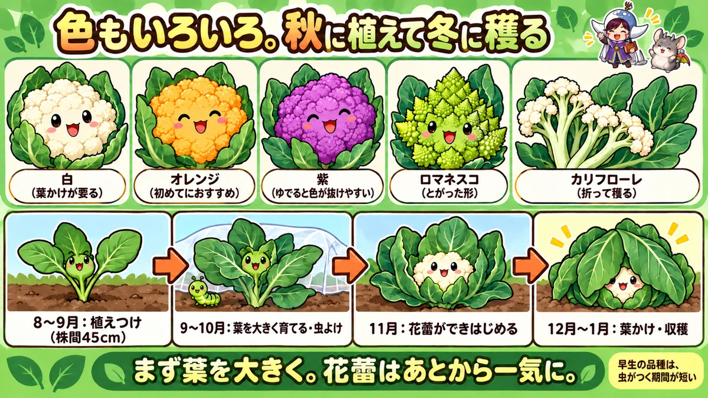
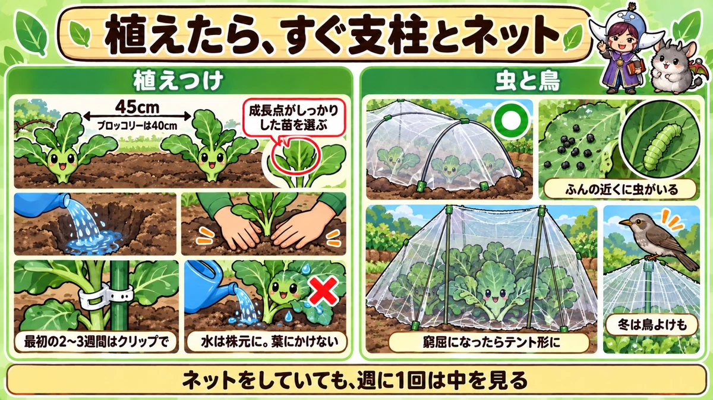

Cauliflower: big leaves first, then the curd 🥦 Choosing, planting, netting, blanching and harvest

🥦 "The head stayed tiny."
🥦 "It was meant to be white — it went yellow, then purple."
🥦 "By the time I noticed it, it was past its best."
Hello, I'm Eiko. Eight years of growing vegetables organically and without pesticides, and a teaching licence in science.
Boiled, stir-fried or in a stew, cauliflower is a lovely winter vegetable — and these days you can grow orange, purple and pointy romanesco types too.
It's grown almost exactly like broccoli. This article covers the few things that are different, from choosing plants to the harvest.
How to use this article. I garden in central Japan, roughly USDA zone 8b–9a, with the first frost in late November. Timings are relative to your frost dates.
Basics. Family: brassicas. Plant: in spring around your last frost (harvest in midsummer), or — more usual — in late summer, roughly 8–14 weeks before your first frost (harvest from around the first frost into midwinter). From seed, sow a month before planting. Bed: 24–28 in (60–70 cm) wide. Spacing: about 18 in (45 cm). Feed from a month after planting. Canes and netting on planting day.

What this diagram says （図解の文字）
- Many colours. Plant in autumn, pick in winter
- "White (needs leaves folded over)" ／ "Orange (recommended for beginners)" ／ "Purple (loses colour when boiled)" ／ "Romanesco (pointed shape)" ／ "Loose 'stick' type (pick by snapping)"
- "Aug–Sep: planting (45 cm apart)" → "Sep–Oct: grow big leaves, keep insects off" → "Nov: curds start to form" → "Dec–Jan: cover with leaves, harvest" (months for central Japan)
- "Big leaves first. The curd comes later, all at once" ／ "early varieties spend less time exposed to insects"
① What kind of crop it is
Cauliflower is a brassica, like broccoli and cabbage — all descended from the same wild cabbage ancestor. If you've grown broccoli, you can grow this. The white part is a mass of tightly packed flower buds — the "curd", just like broccoli's green head.
How it differs from broccoli
- Spacing: the curd gets big and takes a lot of food, so give it a little more room
- Blanching: white types change colour in sunlight, so leaves are folded over to keep them white
- Side shoots: unlike many broccoli, it rarely produces side shoots after the main head
- Hidden heads: the curd sits inside the leaves, so it's easy to miss the moment
② Choosing what to grow
It's less often grown than broccoli, but its mild, gentle flavour is worth it. One plant gives one head, so plant more if you want more.
- Coloured types are actually easier. White ones need blanching; colour changes barely show on orange. Orange is the top pick — purple loses its colour when boiled. Flavour and difficulty are about the same
- Early types. Many cauliflowers take a long time. A first-timer does best with an early type ready about 70 days after planting — less time in the ground means less time exposed to insects
- Self-wrapping types: some white types have upright leaves that wrap the curd, so you hardly need to blanch
- Romanesco: beautiful spiralling points, almost the same flavour, same growing method — though one grower found it made smaller heads than cauliflower in the same bed
- Loose "stick" types grow a spreading head you snap off piece by piece, like sprouting broccoli; mini types are palm-sized. A full-size head can be more than you can eat at once — these let you take just what you need
- "Multi-headed" types promise several heads; in practice one grower got one big head and a few small ones from the side
③ Planning and preparation
- Spring: plant around your last frost; harvest in midsummer
- Late summer (the usual home-garden choice): plant roughly 8–14 weeks before your first frost, harvest from around the first frost into midwinter. Growing toward winter means fewer insects
- From seed: sow about a month before planting — midsummer for an autumn crop
Check early, mid or late. Days to harvest vary enormously between types, so read the packet or plant label before planning. One grower's example: sow in mid-August, plant by mid-September, harvest from November.
Don't plant late. A late autumn planting doesn't grow big enough before the cold, and the heads stay small.
Good plants: look at the growing point in the centre. Avoid plants where it's crinkled, dead or broken; choose one with a healthy, firm centre.
Beds and soil: 24–28 in (60–70 cm) wide, a little wider than for broccoli. Add compost and fertiliser at least two weeks before planting. After a heavily fed crop like tomatoes there's food left; one grower adds about 3–4 litres of cow manure per square metre plus a little chicken manure and oilseed cake.
④ Planting
About 18 in (45 cm) apart — a bit more than broccoli's 16 in (40 cm). Big heads need plenty of food and light.
- Cut the mulch hole and adjust the depth so the top of the rootball sits slightly above the mulch
- Fill the hole with water and wait until it soaks in
- Hold the stem between two fingers, turn the pot upside down and slide it out
- Set it in without breaking the rootball, fill the gaps
- Press down firmly by hand. Whether you firm it or not makes a big difference to how well it establishes — and a wobbly plant usually has air gaps round the roots
Support it straight away with a cane of about 3 ft (90 cm) — young plants blow over in rain and wind. Tying with string, beginners often snap leaves or stems; plant clips are an easy alternative for the first 2–3 weeks.
Water at the base, not over the leaves. The leaves have a waxy, whitish coating; a hard jet of water can strip it off, which can lead to disease.
Net it the same day, edges buried. Cabbage caterpillars, armyworms and diamondback moth larvae all love cauliflower.

What this diagram says （図解の文字）
- Canes and netting as soon as you plant
- "Planting" — "45 cm (broccoli 40 cm)" ／ "choose a plant with a firm growing point" ／ "use clips for the first 2–3 weeks" ／ ✕ "water at the base, not over the leaves"
- "Insects and birds" — ◯ net tunnel ／ "where there's droppings, there's a caterpillar" ／ "when it gets cramped, make a tent" ／ "in winter, protect from birds too"
- "Even under netting, look inside once a week"
⑤ Insects and birds
Cauliflower doesn't get as tall as broccoli, so you can keep it under netting to the end — though it does get big.
When the net gets cramped
- Push a cane of about 5 ft (150 cm) in, 6–8 in (15–20 cm) from the stem
- Drape the existing net over the cane
- Tie it at the top and gather and tie the bottom — a little tent
It keeps out insects and adds some warmth. Once it's cold, insects are few, so small gaps at the bottom don't matter.
What to check
- Holes in the leaves
- Black, sesame-seed droppings on leaves or mulch — a caterpillar is nearby
- Caterpillars lying flat along the leaf veins
- Inside overlapping leaves and under low leaves
Newly hatched caterpillars are only 1–2 mm long and easy to miss, but they still eat leaves and the growing point. A caterpillar eating the centre can stop the head forming altogether. Anything that looks a bit off probably has something on it.
Netting reduces damage a lot, but not completely. Aphids can be small enough to slip through the mesh. Open it and look inside about once a week. The busiest insect weeks are from planting until about four weeks before the first frost. If leaves are being eaten but you can't find anything, look between leaves and under the mulch — armyworms hide there by day.
Leave mantises alone — they eat the caterpillars. And without sprays, the basic method is regular checks and picking off by hand.
Birds in winter
When the berries run out in winter, birds come down and eat cauliflower, broccoli, cabbage and Chinese cabbage leaves. Old outer leaves don't matter much, but if they eat the young leaves the head won't size up. Birds are wary; netting or bird mesh over the plants keeps them off.
⑥ Feeding and care
- Feed from about a month after planting if the plant looks a little weak or slow — well-rotted organic fertiliser round it. A vigorous plant doesn't need it
- Grow the leaves first. The curd forms and swells quickly only once the leaves are big. Huge leaves and no head yet is nothing to worry about
- Support with a 3 ft (90 cm) cane tied to the stem as the plant gets tall
- Strip lower leaves that are yellow or stuck to the mulch — enough that you can see through to the other side
- In winter, check the soil before watering — it rarely needs much
- Around the first frost, earth up the base; without mulch, tuck in straw or dry grass
- Still small in winter? Stop it getting any colder: fleece over the plant, with more cover on top
No head yet? Cauliflower and broccoli form heads only once the plant is big enough and has had some cold. Heading is the plant's drive to reproduce — it will come. Check what type (early, mid, late) you're growing and be patient.
What this diagram says （図解の文字）
- Keep it white with leaves, feel it before you pick
- "Blanching" — ✕ "sunlight changes the colour"
- "If it turns purple" — "a sign of cold. Perfectly fine to eat"
- "Harvest" — baseball to softball size ◯ ／ ✕ "leave it late and it darkens"
- "Hidden by leaves, so feel for it"
⑦ Blanching: keeping it white
White curds discolour in sunlight. To keep them pure white:
- Start once the curd is showing and starting to grow
- Snap over some outer leaves you don't need
- Lay them over the curd, 3–4 leaves deep, to shut out the light
It's easy. After a windy day, check the next morning that they haven't blown off. Coloured types don't need it — another reason they're easier.
Why it turns purple
As winter deepens, white curds and leaves can turn purple. That's anthocyanin, a purple pigment, appearing after cold. In the cold the plant slows down and can't use all the sugars it makes; the pigment screens out some light so the leaves aren't overloaded. One grower had assumed it was to stop freezing, but on looking into it, concluded the light-screening explanation fits better. It's perfectly fine to eat and tastes the same — though white types look less pretty, so leaf covers help here too.
⑧ Harvest
Cauliflower is easy to pick late, because the curd is hidden. By the time you can see white between the leaves, it's already quite big. Check it now and then even before it shows.
- Feel it with both hands from outside the leaves, round the base of the head. When the firm head is baseball- to softball-sized or more (depending on the type), it's ready — pick early rather than late
- If the centre starts darkening, you're late — pick at once
- Cut the stem below the head with a knife, keeping a few leaves round it so it doesn't bruise
Winter growth is slow and the cold makes trips to the plot rarer — but vegetables still grow, bit by bit, and still have a best moment. Keep visiting.
Side shoots: usually few. Some types or conditions give small ones low down; pick them small, like broccoli side shoots — trying to grow them big tends to fail. After the main head, clear the plant and move on.
⑨ A late-summer planting, step by step
- Midsummer: sow if raising your own; prepare the bed
- Late summer (8–14 weeks before first frost): plant 18 in apart; canes and netting at once; water at the base
- Early autumn: feed from a month after planting if needed; check inside the net weekly; grow big leaves
- Around the first frost: curds start; strip lower leaves; support; earth up or mulch with straw; re-rig or remove the net if cramped
- Early to midwinter: blanch white types; feel and pick early; net against birds
Containers: one plant in a large container. Food and water run out faster, so don't forget the feed from a month after planting, water when the surface is dry, and net it too.
⑩ Where growers disagree, and common problems
- White or coloured? Many people want white; for a first try, coloured types save the blanching
- Net on or off late in the season? Some remove it once insects are few, so the plant can spread and photosynthesise freely; others keep it on as a tent for warmth and bird protection
- Cauliflower or romanesco — which is easier? Accounts differ
- How much fertiliser? "Hungry crop" versus "leftover fertiliser is enough" — judge by how the plant is growing
- All agree: big leaves make a big head
- Small head → planted late, too close, or underfed. Protect it from further cold if it's still small in winter
- Yellowed → sunlight. Blanch as the curd appears
- Darkened → picked late. Feel for it
- Centre eaten → caterpillars at the growing point. Net on planting day and check often
- Purple → cold. Fine to eat
Science bit: leaves are the factory, the curd is the warehouse 🔬
Why white? Many types grow wrapped in leaves, so the curd sees little sunlight. Expose it and the surface changes colour.
Factory and warehouse. The leaves make food from light; the curd stores it and swells. While the factory is small, the warehouse can't fill — that's why big leaves come first.
Cold is the signal. While it's warm, the plant adds leaves. Once it's big enough and has had a spell of cold, it switches to making a head.
The waxy coat on the leaves is armour for the leaf — which is why you don't want to blast it off with the watering can.
Why wider spacing gives bigger heads. Close plants overlap and each gets less light, while the roots compete for food underground. A big-headed crop needs its own share of both.
To sum up
- ✅ Grown like broccoli, but 18 in (45 cm) apart
- ✅ Plant in spring or late summer — don't plant late
- ✅ Early or coloured types for a first try
- ✅ A firm growing point; canes and netting on planting day
- ✅ Feed from a month after planting; big leaves first
- ✅ Fold leaves over white curds as they appear
- ✅ Purple from cold is fine to eat
- ✅ Feel the head with both hands; pick before it darkens
- ✅ Look under leaves and for droppings; check inside the net weekly; guard against birds in winter
Cauliflower takes its time, which makes cutting a big head all the more satisfying. Grow big leaves, keep insects and birds off, and don't miss the moment 🥦
Thank you for reading!